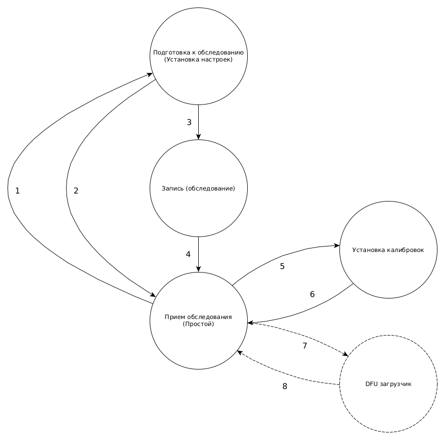

Holteronomicon
Описание интерфейса серии прошивок холтеров от 2020 года
Введение
Описание интерфейса серии прошивок холтеров от 2020 года.
Интро
В документе описывается обновленный интерфейс работы с холтерами
Мотивация
Приняты к сведению ошибки/недостатки предыдущей реализации интерфейса:
- Размытое представление об цикле работы устройства
- Одни и те же вещи делаются разными способами
- Отсутсвтие строго описания времени жизни настроек
- Хранение избыточных мета-данных внутри прошивки (Файловая система)
В приоритете было:
- Максимально упростить/уменьшить код в устройстве
- Расширяемая система команд для разных типов устройств
Что изменилось
- Новая система команд, ввиде регистров с воможностью чтения/записи
- Система команд строится на основе файла описания
- Описание устройства поставляется внешним файлом
- Новый формат паковки сигналов
- Более строгий цикл работы/использования устройства
- DFU загрузчик
Цикл работы

Команды
Описание
Система команд (СК) описывается схемой описания (СО) для каждого типа холтера.
Идеологичесий, СК состоит из набора регистров, небольших виртуальных ячеек предназначенных для хранения и записи данных. (например, запись в регистр включает режим визуализациии).
Группы регистров со схожим смыслом сгруппированы в секции и подсекции.
/survey/name
/survey/surname
/survey/age
где name, surname, age принадлежат секции survey
Секции, подсекции и регистры представляют собой пути в Unix-like стиле. Для примера типичный путь в СК:
/section/subsection/register
Таким образом СК представляет собой древовидную структуру произвольной глубины (на практике мы возможно ограничимся вложенностью N=3), с ветками представляющими собой названия секций и подсекций, и листьями представляющими собой названия регистров.
Регистры
Над регистрами можно проводить две операции, чтение и запись. СК и регистры строго типизированны. Т.е. осуществляя запись в регистр, записываемое значение должно иметь тип указанный в СО. Более подробно о поддерживаемых типах данных см. в разделе Протокол.
Регистры также имееют флаги доступа: только для чтения, только для записи и т.п. Более подробно см. в разделе Схема.
Протокол
Протокол представляет собой смесь между текстовым и бинарным протоколом. Путь регистра представлен в виде строки (ASCII), мета-информация и данные представленны в бинарном формате.
Сообщение представляет собой кортеж из 3-х элементов:
(код_операции, путь_регистра, типизированные_данные)
Или 2-х, в случае операции чтения типизированные данные могут отсутствовать.
(код_операции, путь_регистра)
Типы данных
Протокол поддерживает следующие типы данных:
| Тип | Описание | Длина/байты |
|---|---|---|
| () | Пустой тип, аналог void | 0 |
| bool | Булев тип | 1 |
| u8-u32 | Целочисленные типы | 1-4 |
| i8-i32 | Знаковые целочисленные | 1-4 |
| str | Строка переменной длины | 0..MAX_PAYLOAD_SZ |
| [u8] | Массив байт переменной длины | 0..MAX_PAYLOAD_SZ |
Тип данных кодируется полем PAYLOAD_TY.
Возможные коды типов данных см. в enum TypeTag.
Формат
REQUEST:
Client -> Server
| SIGN/PROTO_VER | PATH_SZ | PAYLOAD_SZ | REQ_CODE | PAYLOAD_TY | PATH | PAYLOAD |
|---|---|---|---|---|---|---|
| 1 байт | 1 байт | 1 байт | 1 байт | 1 байт | PATH_SZ байт | PAYLOAD_SZ байт |
ANSWER:
Server -> Client
| SIGN/PROTO_VER | PATH_SZ | PAYLOAD_SZ | ANS_CODE | PAYLOAD_TY | PATH | PAYLOAD |
|---|---|---|---|---|---|---|
| 1 байт | 1 байт | 1 байт | 1 байт | 1 байт | PATH_SZ байт | PAYLOAD_SZ байт |
Константы
#![allow(unused)] fn main() { use std::mem::size_of; #[repr(packed)] pub struct Header { pub sign: u8, pub path_sz: u8, pub payload_sz: u8, pub code: u8, pub payload_ty: u8, } const MAX_MSG_SZ: usize = 512; const HEADER_SZ: usize = size_of::<Header>(); const MAX_PATH_SZ: usize = MAX_MSG_SZ / 2 - HEADER_SZ; // Размер ограничен максимальным значением u8, так что MAX_PAYLOAD_SZ: 2 -1 const MAX_PAYLOAD_SZ: usize = MAX_MSG_SZ / 2 - 1; // Сигнатура/Версия протокола const SIGN: u8 = 0x8E; }
#![allow(unused)] fn main() { #[repr(u8)] pub enum RequestCode { READ = 0, WRITE = 1, } #[repr(u8)] pub enum AnswerCode { OK_READ = 0, OK_WRITE = 1, ERR_LOCK = 2, ERR_BAD_PROTO = 3, ERR_BAD_FORMAT = 4, ERR_PATH = 5, ERR_TYPE = 6, ERR_USER = 7, } #[repr(u8)] pub enum TypeTag { UNIT = 0, BOOL = 1, I32 = 2, I16 = 3, I8 = 4, U32 = 5, U16 = 6, U8 = 7, STR = 8, BYTES = 9, } }
Схема описания
Для СО используется формат JSON.
Этот формат позволяет представить СО в виде иерархии ключей-значений.
Специальные ключи начинаются с @ (аннотация), и используются для служебной информации.
Рассмотрим фрагмент типовой СО на примере.
{
"@protocol_version": "1.0",
"ctrl": {
"@access": "RW",
"record": "bool",
"vis": "bool",
"event": {
"@type": "[u8]",
"@access": "WO"
},
"erase": "()",
"goto_loader": "()"
}
}
Ключ @protocol_version декларирует версию СО, в данном случае 1.0.
Ключ @protocol_version является обязательным и должен всегда находится на первом уровне вложенности.
Описание секции ctrl декларирует наличие в ней следующих регистров:
recordviseventerasegoto_loader
Например, путь до регистра event будет выглядеть так:
/ctrl/event
Регистры описываются ключем: значением или ключем:{@аннтотация1, @аннтотация2}.
Регистр не может иметь в себе вложенных секций и всегда является самым глубоким элементом вложенности.
Тип данных регистра может быть описан в виде значения ключа регистра, или в случае вложенного описания регистра
с помощью аннотации @type.
Например:
record: bool
или тоже самое, но с использованием вложенного описания:
record: {
@type: bool
}
В случае вложенного описания регистра, нужно обязательно указывать его тип данных с помощью аннотации @type,
обратное является ошибкой.
Об используемых типах данных регистров подробнее см. в разделе Протокол.
Ключ @access находящийся внутри секции ctrl определяет флаги чтения и записи для всего содержимого этой секции.
Подсекции и регистры вложенные в родительскую секцию наследуют ее @access флаги.
Для секций первого уровня по-умолчанию определен @access: RO, т.е. установлен режим только чтение.
Возможные значения @access:
RW-- чтение/записьRO-- только чтениеWO-- только запись
Флаги @access могут быть переопределены у более вложенных элементов, это демонстрируется на примере регистра event:
{
// По-умолчанию "@access": "RO" для корневой секции
"ctrl": {
// Секция ctrl переопределяет RO -> RW
"@access": "RW",
"event": {
"@type": "[u8]",
// Регистр event переопределяет RW -> WO
"@access": "WO"
},
}
}
Пример
Пример СО:
{
"@protocol_version": "1.0",
"@visibility": "public",
"@control": ["ctrl, io"],
"@com1": "Это файл описания протокола и только! А не самого устройства c его форматами и функциональностью!",
"@com2": "Стандартный @access = RO, Если у поля нет вложенных значений, значит указан его тип",
"@com3": "[sign][path_sz][payload_sz][op][ty][path...][payload...]",
"@com4": " header max len = 256, payload max len = 256, msg max len = 512",
"@com5": " max path len = 256 - 5, max payload data len = 256 ",
"ctrl": {
"@access": "RW",
"record" : "bool",
"vis": "bool",
"event": {
"@type": "[u8]",
"@access": "WO"
},
"erase": "()",
"goto_loader": "()"
},
"io": {
"@access": "RW",
"status": "u32",
"file": {
"@com": "pos, len, max в блоках",
"pos": "u32",
"len": "u32",
"start": "()",
"max": {
"@type": "u32",
"@access": "RO"
}
},
"store": {
"@com": "Max line size 64, max line count 64",
"idx": "u8",
"line": "[u8]",
"max": {
"@type": "u32",
"@access": "RO"
}
}
},
"conf": {
"@access": "RW",
"cyclic": "bool",
"time": "u32"
},
"time": "u32",
"signal": {
"@access": "RW",
"ecgf": {
"frq" :"u8"
},
"reof": {
"frq" :"u8"
},
"tst_sig": "bool"
},
"calib": {
"@access": "RW",
"ecg": {
"k": "i32",
"b": "i32"
},
"reo": {
"k": "i32",
"b": "i32"
},
"acc": {
"k": "i32",
"b": "i32"
}
},
"state": {
"voltage": "i32",
"current": "i32",
"stop_reason": "u32"
},
"desc": {
"@com": "Общая инфорация об устройстве",
"version": {
"@type": "str",
"@com": "Версия ПО"
},
"type": "str",
"serial": "str"
},
"build": {
"@access": "RO",
"@fast": true,
"version": "str",
"compiler": "str",
"git": "str",
"timestamp":"str",
"target": "str",
"host": "str",
"profile": "str",
"opt_lvl": "str",
"debug": "bool"
},
"dbg": {
"last": "str",
"last_code": "u32",
"flags": "u32"
},
"survey": {
"@access": "RW",
"id": "u32",
"surname": "str",
"name": "str",
"patronymic": "str",
"sex": "str",
"birth": "str",
"patient_id": "str",
"start_time": "u32"
},
"test": {
"@access": "RW",
"@com": "Тестовые регистры",
"echo" : {
"@type": "[u8]",
"@com": "Эхо тест"
},
"test1": "[u8]",
"test2": "[u8]",
"test3": "[u8]",
"test4": "[u8]",
"test5": "[u8]",
"error": "str"
}
}
Загрузчик
Загрузчик использует DFU USB спецификацию Device Firmware Upgrade, широко распространенный стандарт, применяющийся для обновления прошивок разнообразных устройств.
Благодаря этому для обновления прошивки достаточно использовать стандартные утилиты для работы с DFU (например: dfu-util).
WebUSB
Загрузчик осуществляет поддержку драфта WebUSB спецификации, что позоволяет веб-страницам осуществлять доступ к загрузчику (после выбора устройства в юзер-экшен диалоге).
Демо страница для работы с загрузчиком
Требования WebUSB к хосту
The current WebUSB draft no longer requires the device to support additional WebUSB descriptors. However, implementing WebUSB descriptors allows the device to specify a landing page URL for the browser to present to the user when the device is plugged in.
For an example WebUSB-enabled USB DFU bootloader for the STM32F103 series, check out the dapboot project